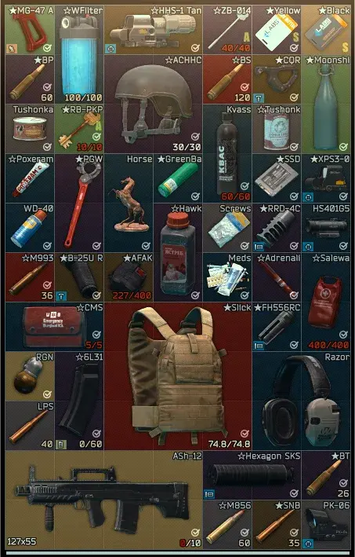
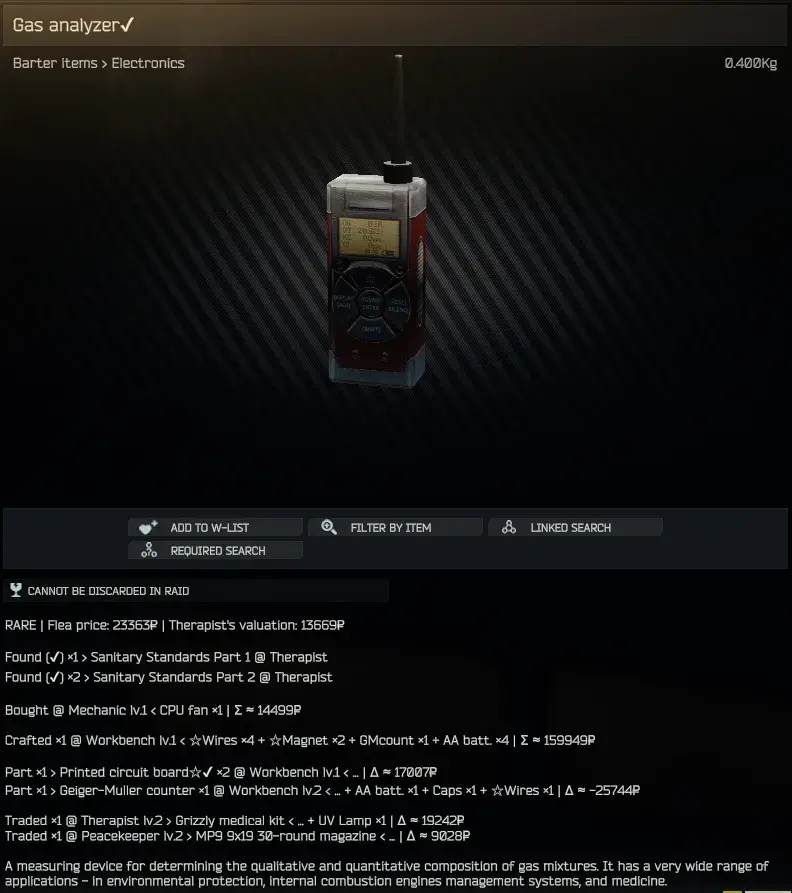
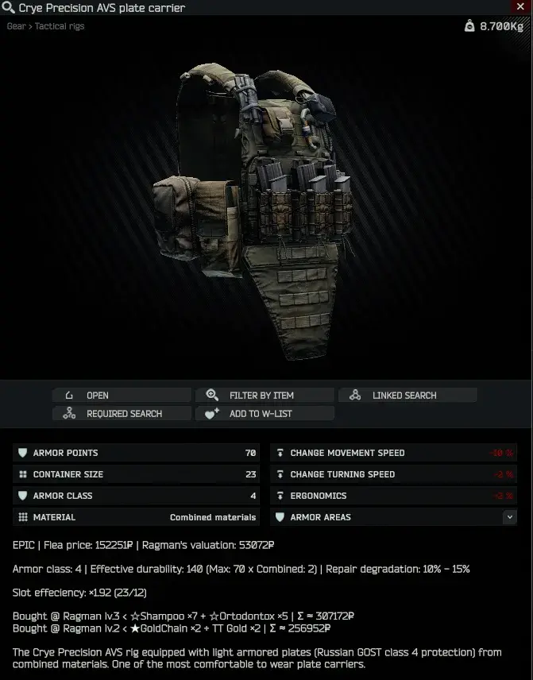

ODT's Item Info - SPT 4.0
- Downloads
- 42,563
- Favourites
- 57
- Mod lists
- 107
ODT-ItemInfo
Massive QOL Item Info mod for SPTarkov. English only (for now).
Features:
Rarity Recolor
This BETA feature clears and changes background color on EVERY item in the game based on MMO style rarity tier-list with colors that make actual sense. Tiers are based on trader level you can purchase or barter the item. Barters are considered +1 rarity level. Banned on flea market items are given highest rarity - overpowered. The tier list:
- Common (grey background, bought with level 1 traders)
- Rare (blue, level 2 trades for currency and level 1 barters)
- Epic (purple, level 3 and level 2 barters)
- Legendary (dim yellow, level 4 and level 3 barters)
- Uber (bright yellow, level 4 barters only)
- UNOBTAINIUM (bright green, super rare spawns, not 100% accurate to actual in-game spawns, especially for keys, but good enough)
- OP (bright red, banned on flea market)
- CUSTOM (dim red, not used by default).
Works for 95% of items well enough to be very much usable. Can add tier name to Prices Info module. Add custom item rarities in config.

Mark Valueable Items
Marks most valuable items by adding symbols ★ and ☆ to item names and inventory icons based on item per-slot value (configured by thresholds in config) when sold to traders OR fleamarket AVG price.
Bullet Stats In Name
Adds bullet stats to bullet name (damage / armor penetration). Calculates total damage for buckshot rounds. VERY usefull in raid, because bullet name is shown when check magazine action is used.
5.45x39mm PP gs (44/36)
Description modules:

Prices Info
Basic module that adds prices information to item description, includes avarage flea price and best trader to sell to.
Flea price: 61703₽ | Ragman’s valuation: 37386₽
Barter Info
Adds information about how you can buy the item from traders, their levels, price or resources (barter resources short names are used and total sum is based on AVG flea prices)
[T H I C C item case] Bought @ Therapist lv.4 < ★Defibrillator ×15 + ★LEDX ×15 + Ibuprofen ×15 + ★Toothpaste ×15 | Σ ≈ 12877545₽
Production Info
If item can be crafted, adds information on resources and total crafting sum per item based on flea prices.
[9x19mm AP 6.3] Crafted ×150 @ Workbench lv.2 < ☆Hawk ×2 + ☆Pst ×400 | Σ per item ≈ 1686₽
Crafting Material Info
Shows if item is used in crafts along with other materials and profit delta based on flea prices only (this messes up calculation on some crafts that can be done insanely cheap using trader materials or items obtained from other crafts). This is a guideline for crafting profits, not a rule.
[SSD drive] Part ×1 > Secure Flash drive ×3 @ Intelligence Center lv.2 < … + ★GPX ×1 + ☆GPhone ×1 | Δ ≈ 16234₽
Barter Resource Info
Shows info if an item can be traded for something with traders along with other resources. Calculates total sum of all resourses (based on flea prices) and delta between buying the final item directly on flea or from trader. Positive delta = profit, negative = don’t bother, buy it directly if you can.
[Ibuprofen painkillers] Traded ×15 @ Therapist lv.4 > T H I C C item case < … + ★Defibrillator ×15 + ★LEDX ×15 + ★Toothpaste ×15 | Δ ≈ -9777545₽
Quest Info
Adds information if the item needs to be handed in for a quest. Marks find in raid quest condition with a checkmark with an option to add this checkmark to an item name.
[CMS surgical kit] Found (✔) ×2 > Ambulance @ Jaeger
Hideout Info
Shows if item is needed for hideout construcion.
[Secure Flash drive] Need ×3 > Intelligence Center lv.2
Armor Info
Adds armor stats for armor level (usefull for Realism mod), effective durability calculation, material quality and per repair degradation.
[BNTI Zhuk-6a body armor] Armor class: 6 | Effective durability: 94 (Max: 75 x Ceramic: 1.3) | Repair degradation: 17% - 22%
Container Info
Adds slot effeciency calculation for rigs, backpacks and containers (number of internal slots / item size)
[WARTECH TV-110 plate carrier rig] Slot effeciency: ×1.92 (23/12)

Headset Info
Adds headset actual audio stats with pseudo compression boost calculation. In theory, more compression and lower ambient volume = better (Big Silly Goose headset rarity tiering supports this theory), but it seems for me, in practice, it’s not always the case in-game. Higher resonance means harsher sound and boost at filter frequency.
[Peltor ComTac 2 headset] Ambient Volume: -5dB | Compressor: Gain 10dB × Treshold -25dB ≈ ×2.5 Boost | Resonance & Filter: 2.47@245Hz | Distortion: 28%
Version
2.0.14
Changelogs
- Further fixes to Ammo Pack price calculation.
- Added custom tier to items that are both Flea-banned and not sold by traders. Those now use
Custom2tier (you can change tier name inconfig/translation.json). - Updated and refactored
BsgBlackListintobsgblacklist.json. It should now in line with Live EFT’s blacklist for the most part. - Corrected semantic version.
Dependencies
Version
2.0.13
Changelogs
- Corrected Ammo Pack
itemRaritycalculation. It previously used the contained ammo’s rarity, causing misclassification when the pack wasn’t sold by any trader and whenfallbackValueBasedRecolorisfalse. - Corrected Ammo Pack price, using Ammo
price * count.
Dependencies
Version
2.0.12
Changelogs
- Fixed
UseBSGStaticBanListoption not working. Mods that modify Flea items should work now (Geko’s Progression, etc…).
Dependencies
Version
2.0.11
Changelogs
- Fixed BarterResourceInfo not working
Dependencies
Version
2.0.10
Changelogs
- Item names (full name) are colored in descriptions
Dependencies
Version
2.0.9
Changelogs
- Fixed other locales not working
- Fixed Production and Crafting Material Info not working correctly
- Fixed incorrect target barter item name
Dependencies
Version
2.0.8
DOWNLOAD THIS VERSION NOW
Changelogs
- Hotfix for color tag looping in item names
- For those that have inflated profile’s size, go in game and delete dialogs in message.
Dependencies
Version
2.0.7
Changelogs
- Added option to enable/disable AddColorToName
- Added a brighter white color to ShortName
Dependencies
Version
2.0.6
Changelogs
- Removed Easy Ammo Name module from Forge release as McDewgle (author) will update the mod.
Dependencies
Version
2.0.5
Changelogs
- Added trader blacklisting from Rarity Calculation for Trader Mods Compatibility. Add the trader’s ID into config to use.
Dependencies
Version
2.0.4
Changelogs
- Fixed Semantic versioning
- Added
BulletStatsInNamefor ammo boxes
Dependencies
Version
2.0.3
Changelogs
- Fixed typo in config that caused MarkValuableItems to not work
Dependencies
Version
2.0.2
REQUIRES SPT 4.0.4+
ItemInfo’s rarity recolor is not compatible with AIO Trader mod.
###Known bugs
- QuestInfo entries are duplicate. Will be fixed in 2.0.3
Bugfixes
- Fixed QuestInfo not working
- Fixed Trader’s valuation not working properly
- Fixed BulletStatsInName not working
- Formatted some strings
Installation
- Drag and drop into SPT installation folder
Dependencies
Version
2.0.1
Hotfix
Please download this version ASAP
- Requires SPT 4.0.3
- Fixed nullref from modded items imcompatibility
- Compatible mods:
- Lacy’s PVE Tweaks (addRecipe: true)
- Epic’s AIO
- Arys - SamSwat Fire Support
- Gilded Key Storage
Dependencies
Version
2.0.0
Updated for SPT ~4.0.0
Changes
- Fixed old bugs
- Optimize runtime performance
Installation
- Drop the folder into SPT installation folder